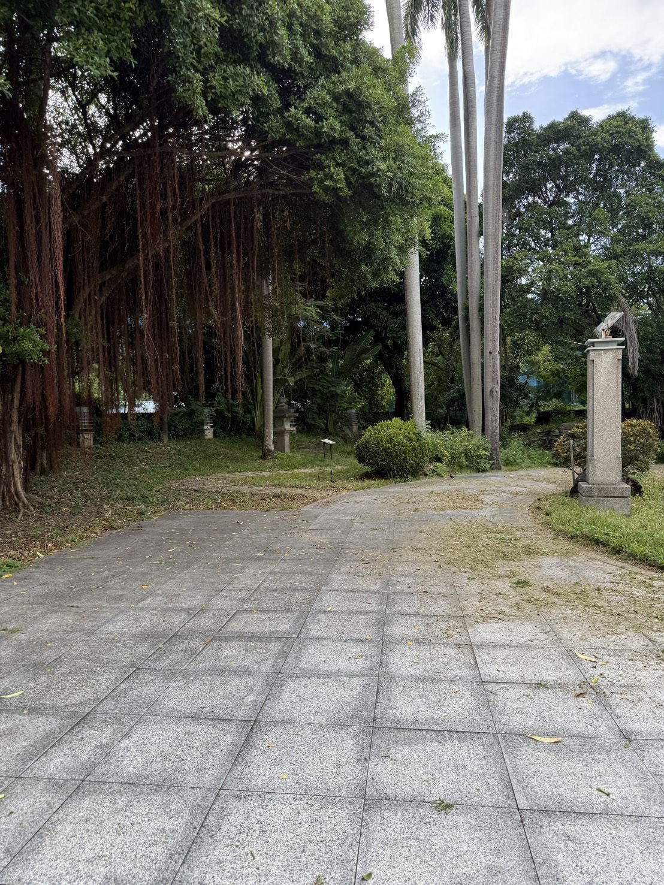

Radio One
On Air
臺中放送局
ON AIR
購票
選台
首頁
打卡點
場館歷史
空間介紹
活動紀錄
系列活動・購票
Radio One Club
租借場地
TUNED
活動紀錄
關閉
首頁
Home
打卡點
Photo Spots
場館歷史
History
空間介紹
Spaces
活動紀錄
Archive
系列活動・購票
Events & Tickets
Radio One Club
Membership
租借場地
Venue Hire

05 · 活動紀錄
光雕、市集、爵士大樂團，
這裡一直很熱鬧
Past Events
從光雕投影到草地野餐市集，放送局辦過的活動都被觀眾拍了下來。影片皆為 YouTube 公開影片，版權屬原上傳者。
活動影片
媒體報導
影片
觀眾鏡頭裡的放送局
媒體報導
他們這樣寫放送局
媒體報導
2017.05.17
帶著舊皮箱去旅行 臺中放送季用故事傳承美好記憶
新頭殼 Newtalk · 臺中放送季以「為臺中發聲」為題，用文學、影像、聲音與設計說台中故事。
2017.05.03
518 國際博物館日 微光旅途走訪舊城
新頭殼 Newtalk · 國際博物館日活動在臺中放送局舉行記者會，以月琴說唱介紹台中博物館。
文資天地
臺中放送季 一起放鬆去
臺中市政府文化局 · 文資刊物專題（PDF）
← 上一台
空間介紹
下一台 →
系列活動・購票